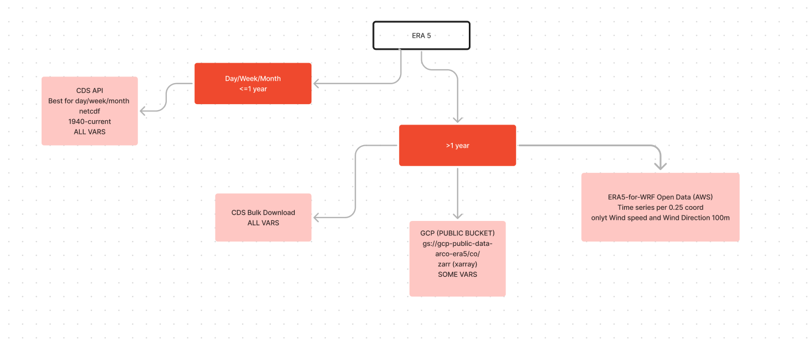

import cdsapi
c = cdsapi.Client()
c.retrieve(
'reanalysis-era5-single-levels',
{
'product_type': 'reanalysis',
'format': 'netcdf',
'year': '2024',
'month': '09',
'variable': [
'10m_u_component_of_wind', '10m_v_component_of_wind',
],
'day': [
'01', '02', '03',
'04', '05',
],
'time': [
'00:00', '01:00', '02:00',
'03:00', '04:00', '05:00',
'06:00', '07:00', '08:00',
'09:00', '10:00', '11:00',
'12:00', '13:00', '14:00',
'15:00', '16:00', '17:00',
'18:00', '19:00', '20:00',
'21:00', '22:00', '23:00',
],
'anon_user_timestamp': '2024-09-11 08:09:06',
},
'download.nc')ERA5 deserves the same recognition as Miss Swift IMO.
So what is ERA5?
ERA5 is short for ECMWF Reanalysis v5 and is a climate data product from the Copernicus Climate Change Service (C3S) at the European Centre for Medium-Range Weather Forecasts (ECMWF). It’s a picture of past weather using a wide range of data sources via numerical weather prediction (NWP) models. OK, enough acronyms for now.
The main WOW factor that ERA5 has over other datasets is it’s incredible spatial and temporal resolution. The data begins 4 months into World War 2 (January 1940) and goes to present day, for every hour, for every 31km section of land and sea across the globe.
In terms of the climate data there is a wide selection at a single atmospheric level and a few at multi-level (e.g. pressure, temperature). Popular single level data includes:
- 10m u-component of wind (velocity in the East direction)
- 10m v-component of wind (velocity in the North direction)
- Mean wave period
- Significant height of combined wind waves and swell
- 2m temperature
- Total precipitation
What can you do with this data?
There are so many potential applications of this data from weather impacts on renewable energy project development (link) and public health, alongside the more standard meterological questions of assessing flood risk, climate change etc.
How do you access this data?
There are three main ways to access the data that I know about:
- Climate Data Store - Copernicus API (CDS API)
- S3 storage (GCP/AWS)
- Google Earth Engine (GEE)

Deciding on which source you use depends on how much data you need and what variables you need. If you need less than a year of any variable go for CDS API; if you need more than a year and any variable email for a bulk download; if you need over a year for a selection of variables then you might be able to use data on AWS/GCP. The Google Earth Engine option can do both, but comes at a high cost for commercial applications; there’s also a good python-based tutorial here.
In the next couple sections I will explain how to obtain credentials, make a request for a portion of ERA5 data and then process in python.
CDS API
The standard way to interact with ERA5 data and one that does a great job for smaller datasets (most likely less than a year).
Credentials
Create an account on cds - go to this page - follow the instructions and create the $HOME/.cdsapirc file.
Data Request
From here you want to generate the API request, the website will build this for you if use the select boxes :
Now copy and paste that into a python script - this will download the data into a netcdf called “download.nc”:
Processing
Download HDF5 libraries for your Linux distribution, then pip install the netCDF4 package.
import netCDF4 as nc
# Open the NetCDF file
file_path = 'download.nc'
dataset = nc.Dataset(file_path, 'r')
# Print the dataset information
print(dataset)
# Extract a variable (e.g., temperature)
temperature = dataset.variables['temperature'][:]
# Print the variable information
print(temperature)
# Close the dataset
dataset.close()Analysis-Ready, Cloud Optimized ERA5 (hosted on GCP)
////////// insert some details /////////
Credentials
The data is public so no need for credentials.
Data Request
Pip install the xarray, zarr, fsspe and gcsfs packages.
Follow the tutorial.
Processing
The data is in Zarr format…. advantages etc.
ERA5 forcing data for the Weather Research and Forecasting (WRF) model (hosted on AWS)
Global timeseries at 0.25 degree resolution from 2000-01 onwards in CSV format, for four variables:
- 100-m wind speed
- 100-m wind direction
- 2-m temperature
- surface pressure
Credentials
It’s a public bucket again, so no credentials needed, however you need to either add configuration details to ~/.aws/credentials or add config as the following way when creating the S3 client:
from botocore import UNSIGNED
from botocore.client import Config
import boto3
s3_client = boto3.client('s3', config=Config(signature_version=UNSIGNED))Data request
Follow this tutorial. In summary you want to find the gid (1 to 1038240) that matched with the latitude/longitude pair that you are interested in and then use this code:
import pandas as pd
from io import StringIO
# example GID
gid = "1038240"
# Define the S3 bucket and file path
bucket_name = 'era5-for-wrf'
file_key = f'global_single_level/cells/{gid}/timeseries.csv'
# Get the file object
s3_object = s3_client.get_object(Bucket=bucket_name, Key=file_key)
# Read the file content
file_content = s3_object['Body'].read().decode('utf-8')
# Use StringIO to convert the file content to a file-like object
csv_string_io = StringIO(file_content)
# Read the CSV file into a Pandas DataFrame
era5_df = pd.read_csv(csv_string_io, index_col = 0, skiprows = 1, parse_dates = True)Processing
The data per point is a CSV with datetime as the index and then the four variables above, simple to work with in pandas or whatever data package you want to use.
What next?
ERA6 will have some advances over ERA5, including improvements:
- resolution of at least 18 km,
- model bias,
- realism of near-surface quantities,
- ocean wave physics
… but won’t be available until 2027. So there’s still life in ERA5 for some time yet, but some things are changing.
The current instance of CDS API will be decommissioned on 26 September 2024 and will no longer be accessible from this date onwards.
Part 2 of this blog will summarise how to get access via the new CDS route.